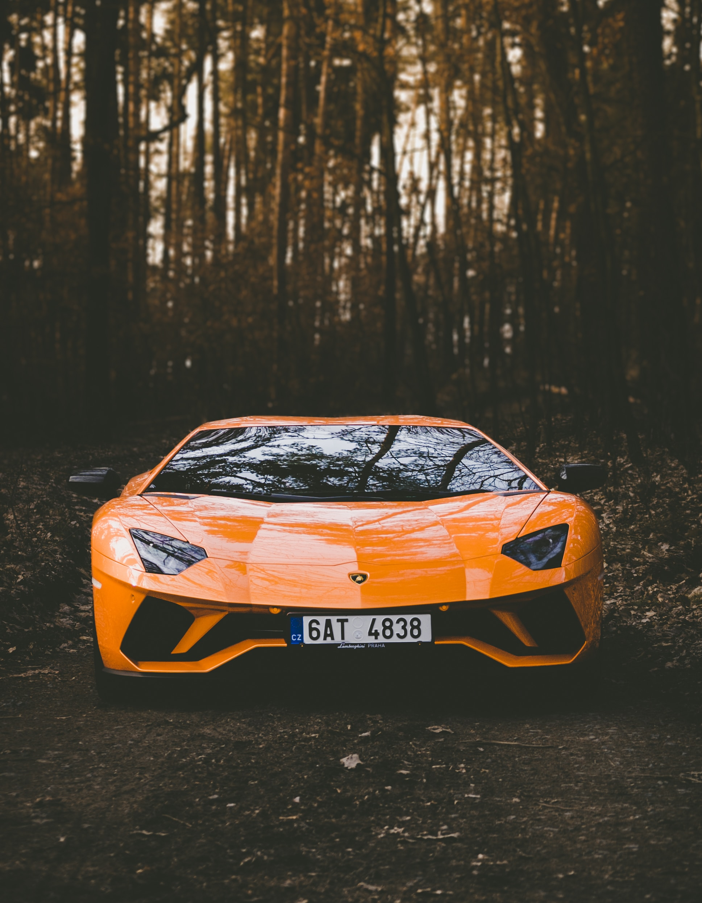

- Ferrari
- Lamborghini
- Mclaren
lamborghini

Automobili-Lamborghini S.p.A
줄여서 Lamborghini)는 고성능의 슈퍼카 및 스포츠카를 만드는
이탈리아의 자동차 제조 업체이다. 본사는 이탈리아 에밀리아로마냐주
볼로냐에 있다.
현재 폭스바겐 산하 고급 브랜드인 아우디의 자회사로 되어 있다.
람보르기니는 이탈리아에 있는 또 다른 슈퍼카 제조 업체 페라리와는 경쟁 관계이며,
회사의 설립도 페라리와의 악연이 시초가 되었다.